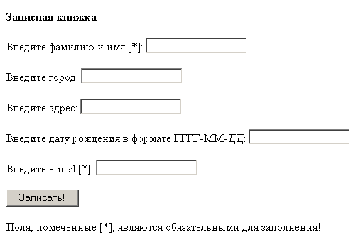
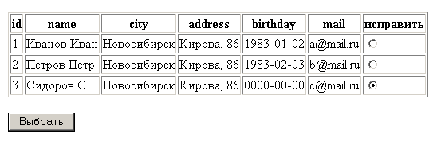
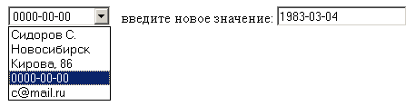
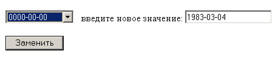

Создайте скрипт ex1.php, в котором в СУБД MySQL в базе данных sample
с помощью функций РНР создайте таблицу notebook
со следующими полями:
id - целое, непустое, автоинкремент, первичный ключ,
name - строка переменной длины, но не более 50 символов,
city - строка переменной длины, но не более 50 символов,
address - строка переменной длины, но не более 50 символов,
birthday - значение даты (DATE), т.е. год, месяц и число,
mail - строка переменной длины, но не более 20 символов.
Обязательно предусмотрите в случае ошибки вывод
предупреждения:
"Нельзя создать таблицу notebook".
Совет. Перед командами создания таблицы добавьте две РНР-команды, в первой из которых содержится SQL-запрос, уничтожающий таблицу, если она уже есть:
"DROP TABLE IF EXISTS notebook"
- для того, чтобы при повторном выполнении скрипта ex1.php не появлялось сообщения об ошибке.
(Использовать листинг 11-1).
Создайте скрипт ex2.php с HTML-формой для заполнения таблицы notebook:

Полями, обязательными для заполнения являются name и mail, т.е. только когда они не пустые, информация заносится в таблицу notebook.
(Использовать листинг 11-2).
Создайте скрипт ex3.php для вывода всех записей таблицы notebook.
В форме для заполнения таблицы ( ex2.php) введите дату с нарушением формата (или вообще не число) и посмотрите, что будет занесено в таблицу.
(Использовать листинг 11-3).
Создайте скрипт ex4.php, в котором:
1. Должна быть HTML-форма, выводящая все записи таблицы notebook, причем рядом с каждой строкой таблицы стоит радиокнопка для выбора той строки, в которой нужно что-то изменить:

Имя этой группы радиокнопок - id, а передаваемое значение - соответствующее значение поля id таблицы notebook (оно равно $a_row[0]).
2. Если значение переменной $id задано, вывести соответствующую строку таблицы в виде выпадающего списка, а рядом текстовое поле для ввода нового значения:

Под выпадающим списком стоит кнопка "Заменить":

Имя элемента select в форме - field_name, имя текстового поля - field_value.
В атрибуте VALUE элементов OPTION (выпадающего списка) значения укажите явно ('name', 'city' и т.д.).
А на экране должны отображаться значения ассоциативного массива
$a_row['name'] ... $a_row['mail'].
Совет. В этой же форме добавьте еще скрытое поле
<input type=hidden name=id value=$id>
чтобы не "потерять" значение пременной $id.
3. Если заданы значения переменных $id и $field_name, обновите в таблице notebook значение поля $field_name на $field_value где id='$id'.
Здесь же вставьте ссылку на файл ex3.php, чтобы увидеть результат (возможно придется дополнительно нажать кнопку "Обновить" браузера).
(Использовать листинг 11-4).